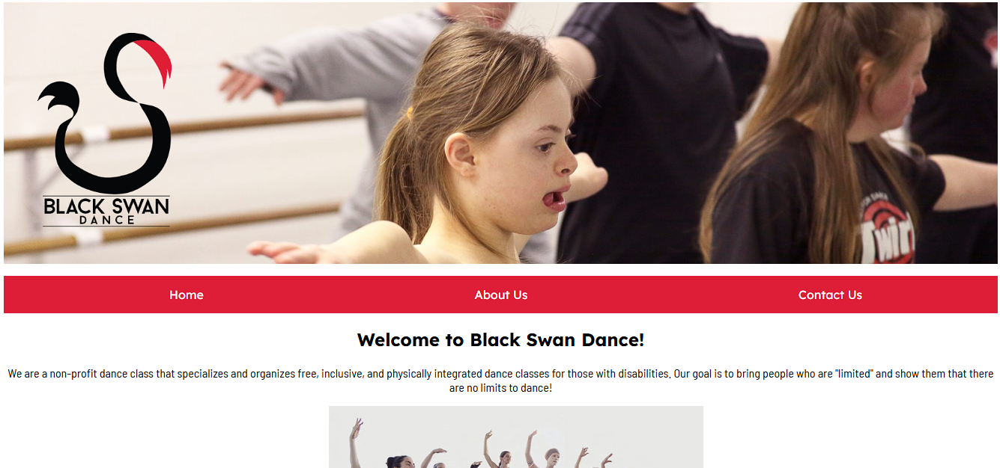
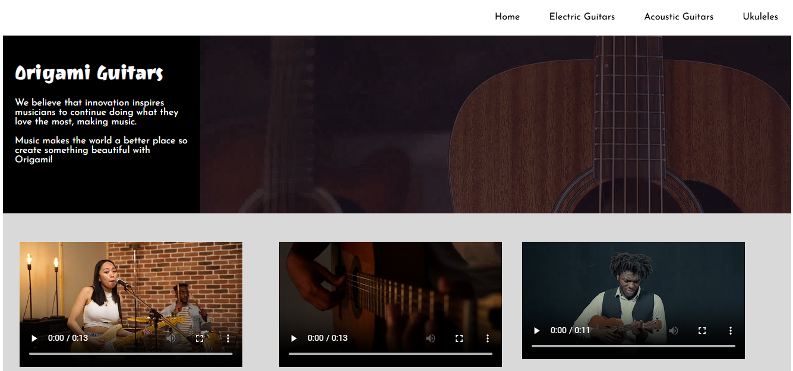
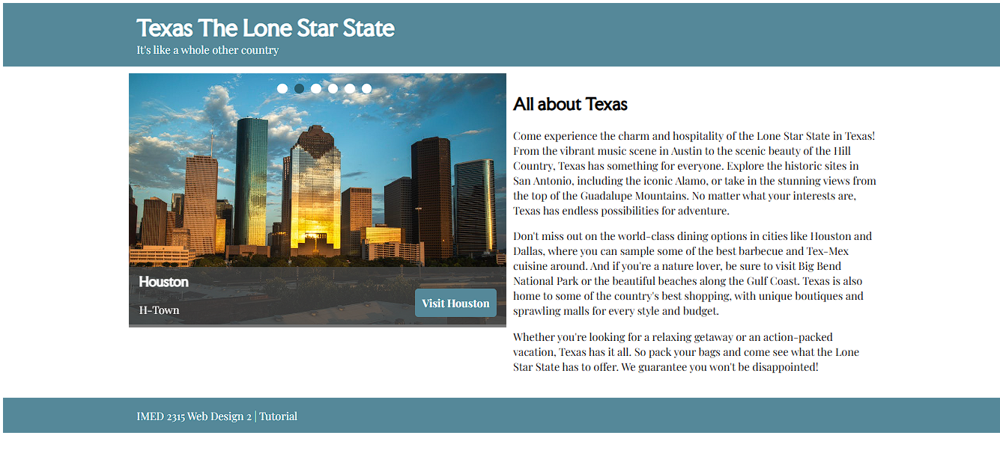
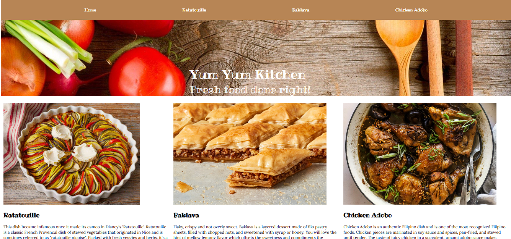

Web Design

Black Swan Dance
The final project of my first semester of web design. This was a challenging way to creatively create a website from scratch based on what I learned that semester. See project

Origami Guitars
This introduced me to adding videos into websites as a visual design element, adding more attention and appeal to the website. See Project

Texas
Getting to know more about transitions, this project helped me achieve the movement, opacity and size needed for each transition. Whether it be information disappearing and reappearing to changing the nav button colors. See Project

YumYum
This project was the first project I did in my first semester of graphic design. I was tasked to create a recipe website and be challenged and familiarized with CSS. This helped create a flat layout into a more dimensional one. See Project